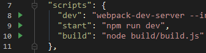
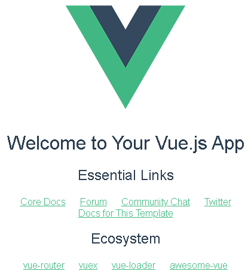
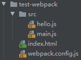
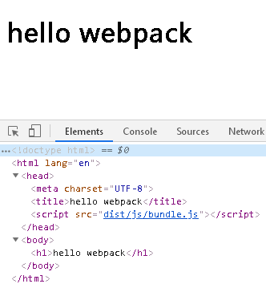
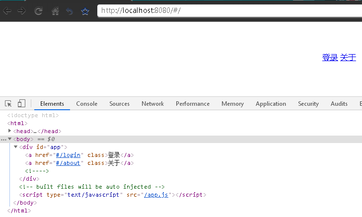
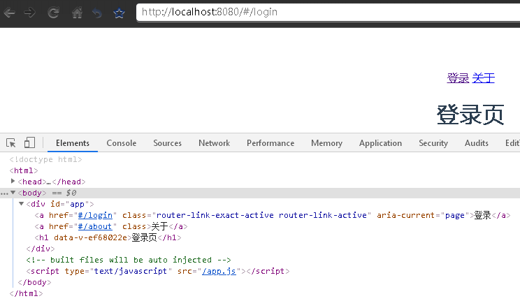
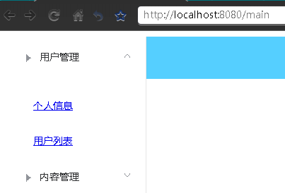

此笔记对应视频： 【狂神说Java】Vue最新快速上手教程通俗易懂 P13-P19
阅读前注意：目前Vue-cli版本已经4.x了，视频中使用的是2.x，区别较大。本文对应视频学习依旧使用2.x版本
一、Vue-cli简介
cli意思是命令行界面（command-line interface）。
vue-cli是一个基于Vue.js进行快速开发的完整系统，是Vue.js开发的标准工具，可以认为它是vue构建项目的脚手架，能够进行组件式开发。
二、准备工作
1、环境需求
要使用vue-cli 2.x，需要以下前提条件：
可以使用安装包(.msi)傻瓜式安装，也可以使用二进制文件（推荐）免安装，解压后将其根目录添加到Path环境变量即可
2、使用淘宝npm镜像
直接使用npm安装模块会走国外的地址，比较慢，推荐使用淘宝npm镜像 ，可以用此代替官方版本(只读)，同步频率目前为10分钟一次以保证尽量与官方服务同步。使用如下命令来安装
1 npm install -g cnpm --registry=https://registry.npm.taobao.org
然后就可以使用cnpm来安装模块了
3、安装vue-cli
1 2 3 npm install -g vue-cli 或 cnpm install -g vue-cli
4、检测安装
使用如下命令查看版本号，检测是否安装成功（最后一个V是大写），如果命令无效，请检查环境变量
三、第一个vue-cli程序
1、部署
使用vue list或vue-list命令查看可以使用的模版（仅2.x版本），如果命令无效就再安装一下vue-cli
Available official templates:
★ browserify - A full-featured Browserify + vueify setup with hot-reload, linting & unit testing.
使用vue init <模版名> <项目名>来创建一个vue项目，例如
1 vue init webpack hello-vue
然后依次提示
手动运行npm install，它会根据项目下package.json文件里的依赖安装node_modules，有很大，接近2万个文件，100+MB
上面的操作都可以在Intellij IDEA的终端里完成
2、运行
执行npm run dev命令，或者使用IDEA在package.json文件里点击start的小箭头

看到编译成功的提示后，用浏览器访问http://localhost:8080/

3、尝试修改
在src目录下App.vue为主文件，里面分为三部分
阅读脚本部分，发现它导入了components目录的HelloWorld.vue文件为组件，将其删减并修改如下
1 2 3 4 5 6 7 8 9 10 11 12 13 14 15 16 <template> <div class="hello"> <h1>{{ msg }}</h1> </div> </template> <script> export default { name: 'HelloWorld', data () { return { msg: 'Hello World' } } } </script>
再次运行npm run dev并访问
四、webpack
在上面那个项目的build文件夹下可以看到webpack相关的配置文件（仅限vue-cli2.x版本），那么接下来就介绍下
1、什么是 webpack?
类似于java的maven，不同的是maven囊括了包管理和打包，而前端则是npm管理包，webpack打包。
本质上，webpack 是一个现代 JavaScript 应用程序的静态模块打包器(module bundler) 。当 webpack 处理应用程序时，它会递归地构建一个依赖关系图(dependency graph) ，其中包含应用程序需要的每个模块，然后将所有这些模块打包成一个或多个 bundle 。
官网 横幅十分形象的展示了webpack的作用

2、安装webpack
目前webpack的版本是
使用npm或者cnpm安装，如果使用 webpack 4版本及以上，还需要安装 CLI。
1 2 cnpm install -g webpack cnpm install -g webpack-cli
不推荐全局安装 webpack。这会将你项目中的 webpack 锁定到指定版本，并且在使用不同的 webpack 版本的项目中，可能会导致构建失败。
但是目前学习阶段暂时使用全局安装
3、编码、打包、使用
项目结构如下

如下依次创建文件并书写代码
1 2 3 4 5 6 7 8 9 10 11 12 13 14 15 16 export default function ( document .write ("<h1>hello webpack</h1>" ); } import hello from "./hello" ;hello ();module .exports = { entry : "./src/main.js" , output : { filename : "./js/bundle.js" } };
然后在项目根目录打开终端使用webpack命令打包，完成后会出现一个dist目录，里面就是已经压缩过了打包好的js文件。
**如何使用？**写一个html来引用它
1 2 3 4 5 6 7 8 9 10 11 <!DOCTYPE html > <html lang ="en" > <head > <meta charset ="UTF-8" > <title > hello webpack</title > </head > <script src ="dist/js/bundle.js" > </script > <body > </body > </html >

五、Vue Router
1、简介
Vue Router 是 Vue.js 官方的路由管理器。它和 Vue.js 的核心深度集成，让构建单页面应用变得易如反掌。
简单来说就是前端控制页面跳转的一种机制，根据不同的 url 地址展示不同的内容和页面，可以实现局部刷新的效果
2、准备工作
使用第一个vue-cli程序 里创建的项目，删除components和assets目录下的文件，App.vue文件中模版仅保留div，脚本仅保留导出名。
在项目根目录使用npm或cnpm命令安装Vue Router
安装完成后，在components目录下新建两个Vue Component文件
Login.vue
1 2 3 4 5 6 7 8 9 10 11 12 <template> <h1>登录页</h1> </template> <script> export default { name: "Login" } </script> <style scoped> </style>
About.vue
1 2 3 4 5 6 7 8 9 10 11 12 <template> <h1>关于页</h1> </template> <script> export default { name: "About" } </script> <style scoped> </style>
3、使用Vue Router
新建一个router目录，并且新建index.js文件，内容如下
1 2 3 4 5 6 7 8 9 10 11 12 13 14 15 16 17 18 19 20 21 import Vue from "vue" ;import VueRouter from "vue-router" ;import Login from "../components/Login" ;import About from "../components/About" ;Vue .use (VueRouter )export default new VueRouter ({ routes : [ { name : 'login' , path : '/login' , component : Login }, { name : 'about' , path : '/about' , component : About } ] })
在main.js里引用router目录并添加到Vue对象
1 2 3 4 5 6 7 8 9 10 11 12 import Vue from 'vue' import App from './App' import router from './router' Vue .config .productionTip = false new Vue ({ el : '#app' , router, components : { App }, template : '<App/>' })
最后在App.vue的模版里使用（此方法为声明式的导航）
1 2 3 4 5 6 7 <template> <div id ="app" > <router-link to ="/login" > 登录</router-link > <router-link to ="/about" > 关于</router-link > <router-view > </router-view > </div > </template>
npm run dev启动程序，访问页面
<router-link>实际上被渲染为了a标签，下图是点击前的页面

点击后

六、在vue-cli中使用element-ui
Element-Ul 是饿了么前端团队推出的一款基于Vue.js 2.0的桌面端UI框架，一套为开发者、设计师和产品经理准备的基于Vue 2.0的桌面端组件库
安装（i是instal的简写，S是save的简写）
用npm i安装的模块无法用npm uninstall删除，用npm uninstall i才能卸载掉
npm i会帮助检测与当前node版本最匹配的npm包版本号，并匹配出来相互依赖的npm包应该提升的版本号
部分npm包在当前node版本下无法使用，必须使用建议版本
安装报错时intall肯定会出现npm-debug.log 文件，npm i不一定
依旧使用上面那个项目，在main,js里引入element-ui
1 2 3 4 5 6 7 8 9 10 11 12 13 14 import Vue from 'vue' import App from './App' import router from './router' import ElementUI from 'element-ui' ;import 'element-ui/lib/theme-chalk/index.css' Vue .config .productionTip = false Vue .use (ElementUI )new Vue ({ el : '#app' , router, render : h =>h (App ) })
新建一个view目录，然后目录下新建文件
Login.vue
1 2 3 4 5 6 7 8 9 10 11 12 13 14 15 16 17 18 19 20 21 22 23 24 25 26 27 28 29 30 31 32 33 34 35 36 37 38 39 40 41 42 43 44 45 46 47 48 49 50 51 52 53 54 55 56 57 58 59 60 61 62 63 64 65 66 67 68 69 70 71 72 73 <template> <div > <el-form ref ="loginForm" :model ="form" :rules ="rules" label-width ="80px" class ="login-box" > <h3 class ="login-title" > 欢迎登录</h3 > <el-form-item label ="账号" prop ="username" > <el-input type ="text" placeholder ="请输入账号" v-model ="form.username" /> </el-form-item > <el-form-item label ="密码" prop ="password" > <el-input type ="text" placeholder ="请输入密码" v-model ="form.password" /> </el-form-item > <el-form-item > <el-button type ="primary" v-on:click ="onSubmit('loginForm')" > 登录</el-button > </el-form-item > </el-form > <el-dialog title ="提示" :visible.sync ="dialogVisible" width ="30%" > <span > 请输入账号和密码</span > <span slot ="footer" class ="dialog-footer" > <el-button type ="primary" @click ="dialogVisible=false" > 确定</el-button > </span > </el-dialog > </div > </template> <script > export default { name : "Login" , data ( return { form : { username : '' , password : '' }, rules : { username : [{required : true , message : '账号不能为空' , trigger : 'blur' }], password : [{required : true , message : '密码不能为空' , trigger : 'blur' }] }, dialogVisible : false } }, methods : { onSubmit (formName ) { this .$refs [formName].validate ((valid ) => { if (valid) { this .$router .push ("/main" ); } else { this .dialogVisible = true ; return false ; } }); } } } </script > <style scoped > .login-box { border : 1px solid #DCDFE6 ; width : 350px ; margin : 100px auto; padding : 35px 35px 15px 35px ; border-radius : 5px ; -Webkit-border-radius : 5px ; -moz-border-radius : 5px ; box-shadow : 0 0 25px #909399 ; } .login-title { text-align : center; margin : 0 auto 48px auto; color : #303133 ; } </style >
Main.vue
1 2 3 4 5 6 7 8 9 <template> <h1 > 首页</h1 > </template> <script > export default { name : "Main" } </script >
修改一下路由
1 2 3 4 5 6 7 8 9 10 11 12 13 14 15 16 17 18 19 import Vue from "vue" ;import VueRouter from "vue-router" ;import Login from "../view/Login" ;import Main from "../view/Main" ;Vue .use (VueRouter )export default new VueRouter ({ routes : [ { path : '/main' , component : Main }, { path : '/login' , component : Login } ] })
修改App.vue
1 2 3 4 5 6 7 8 9 10 11 <template> <div id ="app" > <router-view > </router-view > </div > </template> <script > export default { name : 'App' } </script >
然后就可以运行了，访问http://localhost:8080/#/login，输入任意字符点击登录即可跳转
七、Vue Router补充内容
1、嵌套路由
1.1 简述
实际生活中的应用界面，通常由多层嵌套的组件组合而成。同样地，URL 中各段动态路径也按某种结构对应嵌套的各层组件，例如：
1 2 3 4 5 6 7 8 /user/foo/profile /user/foo/posts +------------------+ +-----------------+ | User | | User | | +--------------+ | | +-------------+ | | | Profile | | +------------> | | Posts | | | | | | | | | | | +--------------+ | | +-------------+ | +------------------+ +-----------------+
借助vue-router，使用嵌套路由配置，就可以很简单地表达这种关系。
1.2 使用
接着使用上面的项目，在view文件夹下新建user文件夹，然后新建文件
Profile.vue
1 2 3 4 5 6 7 8 9 <template> <h1>个人信息</h1> </template> <script> export default { name: "Profile" } </script>
List.vue
1 2 3 4 5 6 7 8 9 <template> <h1>用户列表</h1> </template> <script> export default { name: "List" } </script>
修改Main.vue
1 2 3 4 5 6 7 8 9 10 11 12 13 14 15 16 17 18 19 20 21 22 23 24 25 26 27 28 29 30 31 32 33 34 35 36 37 38 39 40 41 42 43 44 45 46 47 48 49 50 51 52 53 54 55 56 57 58 59 60 <template> <div> <el-container style="float: left"> <el-aside width="200px"> <el-menu :default-openeds="['1']"> <el-submenu index="1"> <template slot="title"><i class="el-icon-caret-right"></i>用户管理</template> <el-menu-item-group> <el-menu-item index="1-1"> <router-link to="/user/profile">个人信息</router-link> </el-menu-item> <el-menu-item index="1-2"> <router-link to="/user/list">用户列表</router-link> </el-menu-item> </el-menu-item-group> </el-submenu> <el-submenu index="2"> <template slot="title"><i class="el-icon-caret-right"></i>内容管理</template> <el-menu-item-group> <el-menu-item index="2-1">分类管理</el-menu-item> <el-menu-item index="2-2">内容列表</el-menu-item> </el-menu-item-group> </el-submenu> </el-menu> </el-aside> </el-container> <el-container> <el-header style="text-align: right; font-size: 12px"> <el-dropdown> <i class="el-icon-setting" style="margin-right: 15px"></i> <el-dropdown-menu slot="dropdown"> <el-dropdown-item>个人信息</el-dropdown-item> <el-dropdown-item>退出登录</el-dropdown-item> </el-dropdown-menu> </el-dropdown> </el-header> <el-main> <router-view/> </el-main> </el-container> </div> </template> <script> export default { name: "Main" } </script> <style scoped> .el-header { background-color: #55cfff; color: #333; line-height: 60px; } .el-aside { color: #333; } </style>
修改路由配置
1 2 3 4 5 6 7 8 9 10 11 12 13 14 15 16 17 18 19 20 21 22 23 24 25 26 27 import Vue from "vue" ;import VueRouter from "vue-router" ;import Main from "../view/Main" ;import Profile from "../view/user/Profile" ;import List from "../view/user/List" ;Vue .use (VueRouter )export default new VueRouter ({ routes : [ { path : '/main' , component : Main , children : [ { path : '/user/profile' , component : Profile }, { path : '/user/list' , component : List } ] } ] })
注意：以 / 开头的嵌套路径会被当作根路径，否则就是相对当前路径
2、参数传递
在Main.vue里修改个人信息的路由链接
1 <router-link :to ="{name: 'profile', params: {id: 1}}" > 个人信息</router-link >
给to属性加:符号绑定数据，name参数只能传递路径的name，所以修改路由配置，同时在path上绑定参数名
1 2 3 4 5 6 7 8 9 10 11 12 13 path: '/main', component: Main, children: [ { name: 'profile', path: '/user/profile/: id', component: Profile } , { path: '/user/list', component: List } ]
最后修改Profile.vue显示参数
1 2 3 4 5 6 <template> <div> <h1>个人信息</h1> {{$route.params.id}} </div> </template>
演示：
3、重定向
重定向也是通过 routes 配置来完成的
1 2 3 4 { path: '/index', redirect: '/main' }
这样，访问/index就会跳转到/main路径
4、404页面
常规参数只会匹配被/分隔的URL片段中的字符。如果想匹配任意路径，我们可以使用通配符*
当使用通配符路由时，请确保路由的顺序是正确的，也就是说含有通配符的路由应该放在最后 。路由{ path: '*' }通常用于客户端 404 错误
view目录下新建一个Error.vue文件
1 2 3 4 5 6 7 8 9 <template> <h1>404，not found</h1> </template> <script> export default { name: "Error" } </script>
在路由配置里增加一个路径
1 2 3 4 5 6 7 8 9 10 export default new VueRouter ({ routes : [ { path : '*' , component : Error } ] })
5、路由钩子（组件内的导航守卫）
类似于springMVC的拦截器
“导航”表示路由正在发生改变
修改Profile.vue
1 2 3 4 5 6 7 8 9 10 11 12 13 14 15 16 17 18 19 20 21 22 23 24 <template> <div> <h1>个人信息</h1> {{$route.params.id}} </div> </template> <script> export default { name: "Profile", beforeRouteEnter:(to, from, next) => { console.log("进入路由前"); next(); }, beforeRouteUpdate:(to, from, next) => { console.log("更新路由前"); next(); }, beforeRouteLeave:(to, from, next) => { console.log("离开路由前"); next(); } } </script>
参数说明：
方法说明：
beforeRouteEnter：在渲染该组件的对应路由被确认前调用，不能 获取组件实例 this，因为当守卫执行前，组件实例还没被创建
beforeRouteUpdate：在当前路由改变，但是该组件被复用时调用，比如路径/user/profile/1跳转到/user/profile/2，由于会渲染同样的组件，因此组件实例会被复用。而这个钩子就会在这个情况下被调用。可以访问组件实例 this
beforeRouteLeave：导航离开该组件的对应路由时调用，可以访问组件实例 this
6、HTML5 History 模式
前面关于路由的所有示例，路径上都会有一个#符号，这是因为
vue-router默认hash模式 —— 使用URL的hash来模拟一个完整的URL，于是当URL改变时，页面不会重新加载。
如果不想要很丑的hash，我们可以用路由的history模式，这种模式充分利用history.pushState API 来完成URL跳转而无须重新加载页面。
修改路由配置，增加一个属性，注意history是字符串
1 2 3 4 5 6 7 8 9 10 11 import Vue from "vue" ;import VueRouter from "vue-router" ;Vue .use (VueRouter )export default new VueRouter ({ mode : 'history' , routes : [ ] })
使用history模式时，URL就像正常的url了

需要注意的是，这种模式需要后台配置的支持。因为vue应用是个单页客户端应用，如果后台没有正确的配置，当用户在浏览器访问如例如这样http://oursite.com/user/id的路径时会返回404